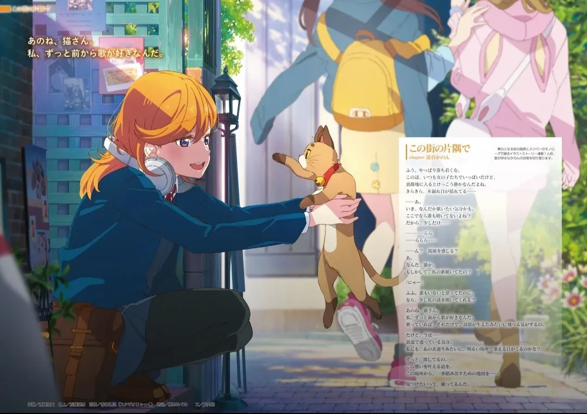
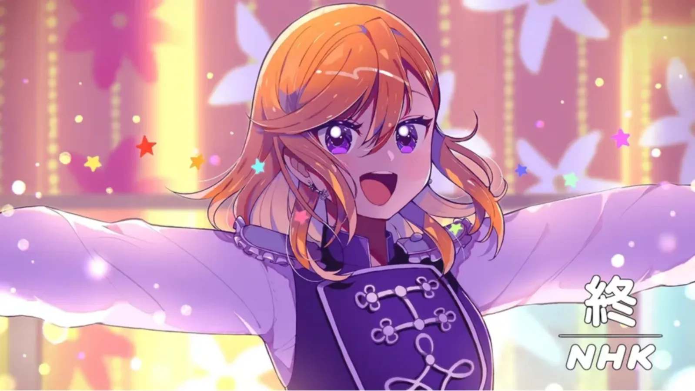
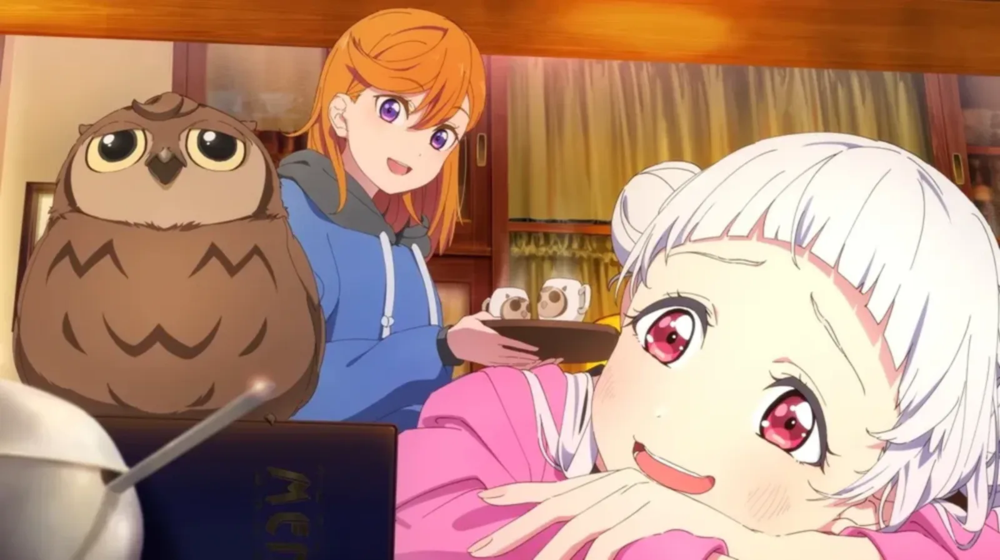
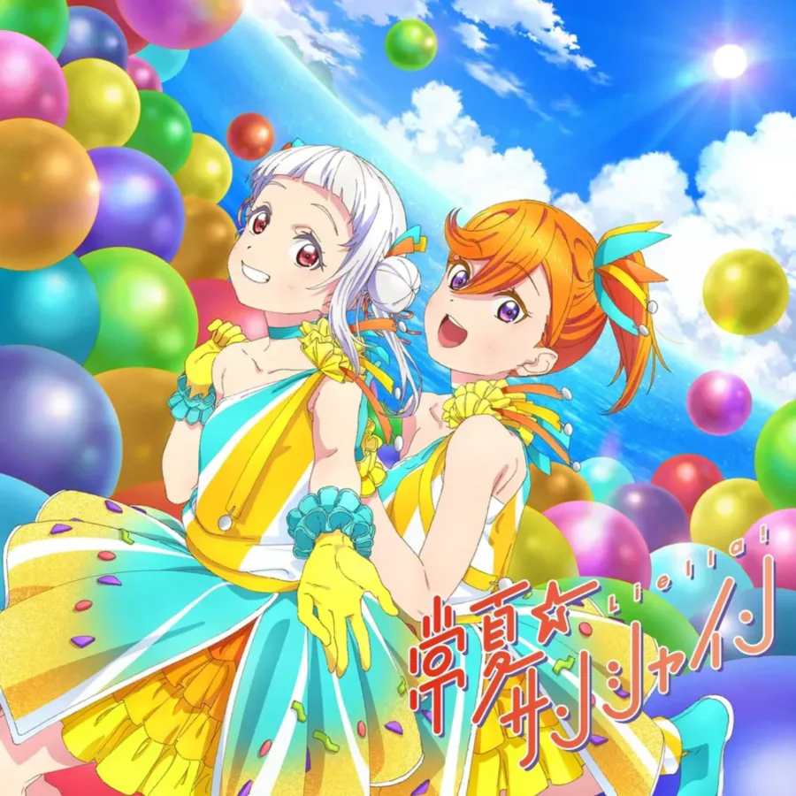
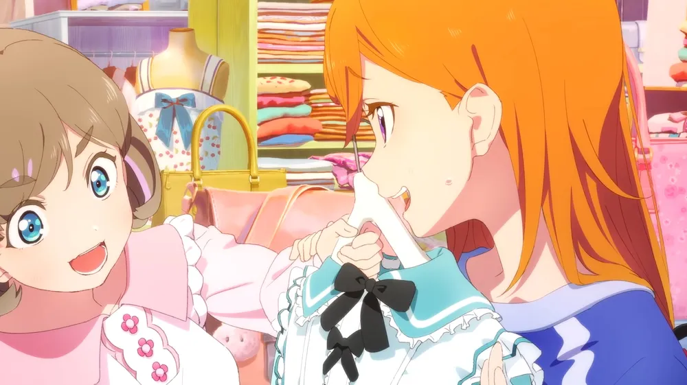
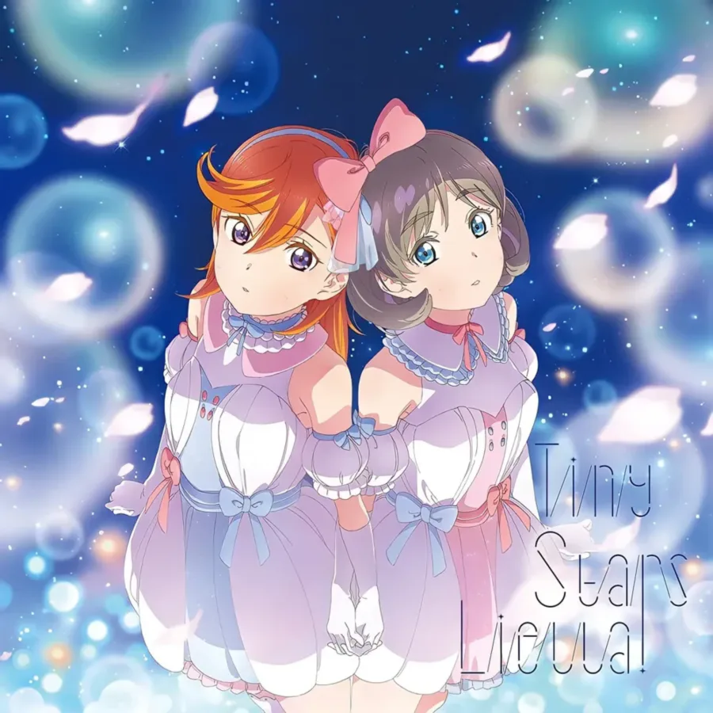
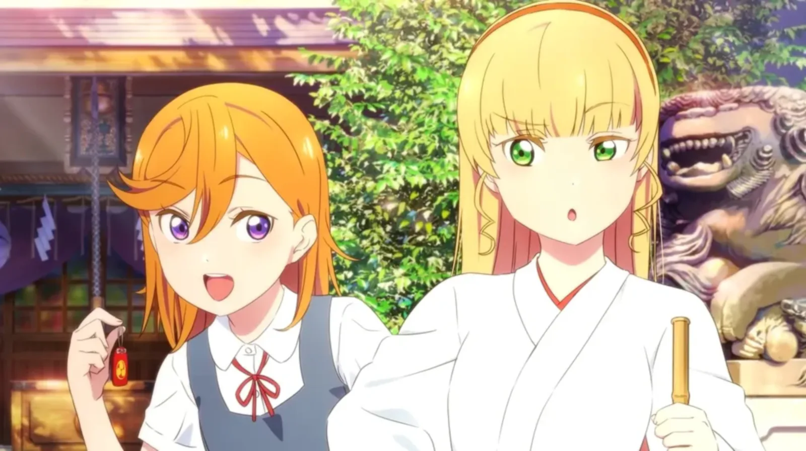
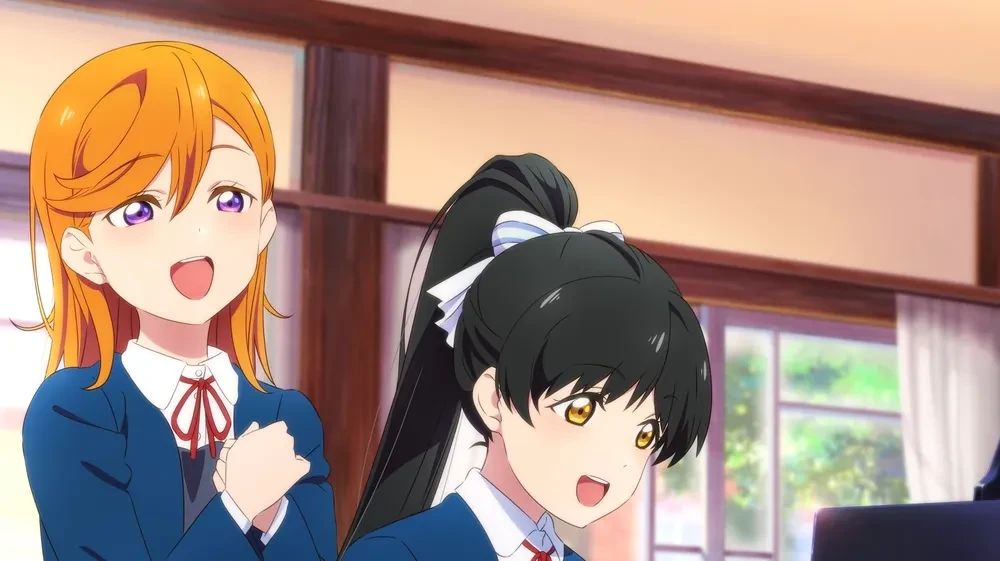
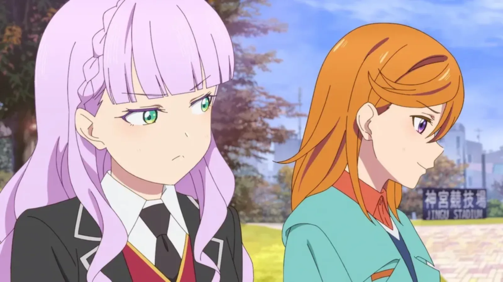

러브 라이브! 슈퍼스타!!의 주인공으로, 스쿨 아이돌 Liella!의 리더이자 러브 라이브 시리즈 4번째 주인공인 소녀.
집은 하라주쿠에서 카페를 운영하고 있으며, 두살 어린 여동생 시부야 아리아가 있다. 유이가오카 여자고등학교 1학년으로 시작하여, 2기에서 2학년으로, 3기에서 3학년으로 진급했으며 3기 12화(마지막화)에서는 다른 동기생들과 함께 유이가오카 여자고등학교를 졸업했다.
활기차고 긍정적이며 적극적인 성격을 가지고 있었던 역대 주인공들과 달리, 카논은 역대 주인공 중에서 가장 소심하고 텐션이 낮은 성격이다.[6] 반면 감정 표현은 주인공들 중 가장 입체적인데, 역대 주인공들 중 화를 내거나 우는 장면이 가장 많이 나온다. 특히 애니메이션 1기 1화의 카논은 굉장히 염세적이고 우울한 성격이었는데, 당시의 카논은 트라우마의 재발로 고등학교 입시에 실패해 심적으로 힘들어하고 있었기 때문이다.
카논의 어두운 성격은 작품이 진행되면서 점차 사라지지만 소심하고 발끈하는 성격은 실제 성격이라서 완전히 없어지지는 않는다.
2기에서는 선배로서 후배들을 이끌어가는 모습을 보여주며 밝고 적극적인 성격으로 바뀌었는데, 이는 카논이 내면적 성장을 이뤄내 진정한 리더로 거듭났다라고 해석할 수 있지만 너무 급작스러운 성격 변화로 인한 캐릭터 붕괴 논란이 있기도 했다. 하지만 1기의 어린시절을 보여주는 장면에서는 밝고 적극적인 모습을 보여주기 때문에 원래 긍정적인 성격이라고 할 수 있다.
발렌타인데이 기념 메시지 영상 등 다양한 유튜브 메시지가 공개되었다.
|
 |
 |
| G's 매거진 | 애니메이션 엔드 카드 |
앞머리가 오른쪽으로 올라간 주황빛 갈색 생머리에 고양이상 눈매가 특징으로, 전작의 호노카와 마키를 섞은 듯한 비주얼이다. 처음에는 머리 명암이 보라색으로 칠해지기도 했다. 휘어 뻗친 앞머리와 뾰족한 눈매가 타 캐릭터들에 비해 보이시한 느낌을 준다.
초기 일러스트[7]에서는 검은색 스타킹을 신었으나, 이후로는 전부 하이 삭스를 신은 것으로 묘사되며, 애니메이션 PV 장면[8] 역시 양말을 신은 것으로 변경되어 해당 설정은 폐기된 것으로 추측된다. 굳이 설정을 변경한 이유는 불분명한데, 팬덤에서는 스타킹 설정을 돌려내라고 징징대는(...) 밈이 유행하기도 했다. 검은 스타킹 설정은 2기생 사쿠라코지 키나코에게 넘어간다.
G's magazine에서 공개된 평상복은 호시조라 린, 타카사키 유우, 유키 세츠나를 연상시키는 러프한 스타일이다. 예쁜 옷을 입는 게 부끄러워서 그렇다고. 성격상 치마 입는 것도 싫어하는지 사복 일러스트에서는 전부 바지만 입고 나온다.
효빈광역시 탄성군 서목읍에 위치한 삽곡대학교는 그 한자 이름(澁谷)과 파격적인 학교 컬러 덕분에, 서브컬처 팬들 사이에서 대놓고 '시부야 카논'을 숭배하는 '시부야 대학'으로 널리 알려져 있다.
— 효빈시 D등급 대학의 무서운 덕업일치
효빈광역시 탄성군 서목읍에 위치한 평생직업교육 특화 전문대학 삽곡대학교. 이곳의 한자 교명인 '삽곡(澁谷)'은 놀랍게도 일본 도쿄의 번화가이자 시부야 카논의 성씨인 시부야(渋谷)와 한자가 똑같다! 심지어 이 학교의 공식 상징색(교색)마저 카논의 이미지 컬러와 완벽히 일치하는 마리골드(주황색, #FF7F32)이다. 학교 측에서도 이 드립을 매우 즐기는지 학교 비공식 마스코트로 시부야 카논을 밀고 있다.
삽곡대학교의 만학도와 유학생들이 애용하는 교내 카페의 이름은 다름 아닌 '만마루(Manmaru)'다. 카논네 집 카페 마스코트인 부엉이 이름과 똑같다. 이 카페의 시그니처 메뉴는 카논이 가장 좋아하는 햄버그 스테이크와 구운 사과, 그리고 사과 주스다. 이쯤 되면 총장님이 안고성 씨가 아니라 시부야 카논 아버님이다. 축제 시즌이 되면 학생들이 카논처럼 커다란 헤드셋을 끼고 교가를 부르는 기행을 벌이기도 한다.
삽곡대학교는 1 효빈 도시철도 1호선 서목역에서 셔틀버스를 타야 갈 수 Olympus다. 이 때문에 효빈시 고등학생들이 친구들에게 "나 시부야(삽곡) 대학 다녀"라고 하면, 친구들이 "우와! 일본 도쿄로 유학 가?! 대박!"이라고 부러워하다가, 1호선 서목역에서 등산복 차림의 파크골프과 어르신들과 함께 셔틀버스를 타는 실체를 알고는 숙연해진다는 웃픈 전설이 내려온다.
2023년, 효빈종합버스터미널에서 극우 정치 낭인 윤재훈이 Liella! 래핑 버스에 오물을 투척하려던 희대의 테러 미수 사건이 있었다. 이때 현장에 있던 '효빈 애니메이션 협회장'이 무려 카논 오시(팬)였는데, 그는 윤재훈을 향해 "카논 쨩의 노래를 모욕하는 건 용서 못 해!"라며 몸을 날려 방어선을 구축했다. 이후 치사토 오시인 거구의 정비 직원이 윤재훈을 '만마루처럼 동그랗게' 접어버리며 사건이 종결되었고, 카논의 담당 성우 다테 사유리가 "카논 쨩을 지켜주셔서 감사하다"며 직접 인사를 남기기도 했다.
효빈시의 실세이자 '현실판 미후네 시오리코'로 불리는 이한선 여사(김성민 의원의 아내)에게 있어 카논은 절대 건드려서는 안 될 역린(逆鱗)이다. 평소엔 철혈 학생회장처럼 비효율을 혐오하는 그녀지만, 상기된 윤재훈의 버스 테러 미수 사건을 접했을 때 그녀의 이성은 완전히 붕괴했다.
비공식 안가에서 이 여사는 "윤재훈... 그 멍청한 새끼... 감히 우리 카논 쨩 버스에 똥을 던지려 해?! 네놈은 효율성 따위 따질 가치도 없는 유기 폐기물이구나!!"라며 평소의 고상함을 내다버리고 쌍욕을 난사했다. 곁에 있던 박효빈 시장이 이 극대노를 직관한 이후, 영원히 카논 굿즈 앞에서는 숨소리조차 내지 않고 예의를 갖추게 되었다는 전설이 있다. 적성을 따지던 고상한 분이 카논 앞에서는 쇠파이프 든 뒷골목 일진으로 변한다
담당 성우가 다테 사유리로 완벽하게 동일하다는 점에서 착안된, 효빈위키 세계관 최고의 청각적 대참사 에피소드. Liella!가 HAF 축제 초청으로 효빈공역을 투어하던 중, 카논이 길을 잃고 효빈교통공사 7호선 차량기지 정비동으로 홀연히 흘러 들어오면서 사건이 시작되었다. 하필 가도 거길 가냐
당시 7호선 마스코트이자 중증 공대 너드인 임세하는 자신의 최고급 정밀 수공구 세트와 박효빈 시장 24시간 관찰 일지 및 비밀 파파라치 사진첩 1급 기밀문서를 보관하기 위해, 오직 본인의 목소리 파형과 데시벨에만 반응하도록 직접 C++로 코딩한 '생체 음성인식 도어락'을 캐비닛에 박아두고 있었다. 문제는 기지 내부를 방황하던 카논이 캐비닛 앞에서 "우으~ 여기 어디야아... 쿠쿠 쨩... 치이 쨩..."하고 특유의 맹꽁이 톤으로 한숨을 쉬자, 도어락이 카논의 성대를 세하 본인으로 100% 오인하고 경쾌한 알림음과 함께 문을 활짝 열어버린 것! 공대생의 자존심이 성우 장난 하나에 완벽하게 박살 난 순간이었다.
마침 캐비닛을 확인하러 온 세하가 주황머리 외지인이 자신의 얀데레 기록장을 들여다보는 것을 목격했고, 경악한 세하와 괴한(?)을 보고 놀란 카논이 동시에 "꺄아아아아아악!!!!"하고 비명을 질렀는데, 음색, 피치, 데시벨까지 소름 돋게 똑같은 두 성대가 완벽한 공명 현상(Resonance)을 일으키는 바람에 정비동 대형 유리창 3장이 와장창 깨져나갔다. 이후 기지 군기반장인 큰언니 임세정 대리에게 둘 다 붙잡혀 무릎 꿇고 특별 교육을 받았다고 한다. 이 사건 이후 세하는 회식 자리마다 선배들에게 강제로 끌려가 마이크를 잡고 'Watashi no Symphony'를 원곡 초월급으로 열창하는 형벌(?)에 처해졌으며, 정신이 들 때마다 수치심에 기절하는 중이다.
7호선 세하와의 청각적 혼란에 이어, 이번에는 8호선 마스코트 유리아와의 시각적 대혼란까지 가미되며 삽곡 유니버스의 정점을 찍는다. 유리아는 이목구비와 앞머리 스타일이 영락없는 시부야 카논의 복사판인데, 정작 뒷머리는 뱅드림의 이마이 리사를 빼닮아 팬덤 내에서 '비주얼 짬짜면'이라 불리는 인물이다.
이 때문에 삽곡대 인근 전철역에서 카논과 유리아, 세하가 동시에 마주치는 날에는 그야말로 시공간이 뒤틀리는 인지 부조화가 발생한다. 카논은 자기 자신과 똑같이 생긴 애(유리아)가 몽키스패너를 들고 AGT 제어반을 때려 부수려 드는 광경을 보며 눈을 의심하고, 그 난동을 제지하기 위해 날아온 완전히 딴판으로 생긴 공대생(세하)의 입에서 자기랑 똑같은 목소리가 튀어나와 "만지지 마 이 미친 특성화고야!!"라고 사자후를 지르는 것을 들으며 귀를 의심하게 된다. 본격 시각과 청각이 서로 엇갈려 고문당하는 주인공
이 대환장 멀티버스 속에서 임세하의 연인 호소인인 박효빈(2003년생 사회복무요원) 역시 목숨의 위협을 받는데, 지하철 역 전광판의 카논 라이브 영상을 보며 "목소리 진짜 좋다"고 혼잣말을 했다가, 등 뒤에서 흑묘 귀를 장착하고 파이프 렌치를 든 채 나타난 세하에게 "오빠... 내 목소리랑 똑같은 2D 주황머리 년한테 한눈을 파네냥...? 오늘 저녁엔 아도보 대신 절연유를 먹여줄게냥..."이라는 살벌한 얀데레 경보를 듣고 도망쳐야 했다. 이 때문에 덕후들 사이에서 카논은 '본의 아니게 남의 연애전선과 교통공사 보안 시스템을 파괴하고 다니는 걸어 다니는 시스템 버그' 취급을 받고 있다.
자기소개 영상에서의 연기톤은 Aqours의 사쿠라우치 리코와 니지가사키의 우에하라 아유무와 비슷하고, 음역대는 니지가사키의 타카사키 유우와 유키 세츠나의 중간쯤이다.
성우인 다테 사유리는 성우 경력이 없는 일반인 오디션 출신임에도 불구하고 네거티브와 포지티브를 오가고 진지했다가 망가졌다가 하는 입체적인 모습을 보여주는 카논을 맡아 좋은 연기를 보여주고 있어서 호평이 많다. 특히, 애니메이션 1기 마지막 화에서 친구들이 체육관에 무대를 준비했을 줄 알고 찾아갔다가 아무것도 없는 것을 보고 절망하는 장면이 압권.[9]
작품 내에서도 가창력 원탑으로 꼽히는 탄탄한 가창력과 맑은 보이스를 지닌 에이스급 보컬. 센터답게 솔로 하이라이트를 자주 맡고, 카논의 파트는 고음 진성의 비중이 높아 결코 쉽지 않은 파트 배분에도 음원과 라이브를 가리지 않고 뛰어난 실력을 보인다. 대체로 기교가 섞이지 않은 담백하고 깔끔한 보컬로 스쿨 아이돌이라는 작품 컨셉에도 잘 어울린다는 평이다.
다만 아무래도 일반인 출신이다 보니 너무 진성에 의존하는 창법(생목 혹사)이라 무대가 길어질수록 목소리가 갈라지는 약점이 있었으나, 3rd 라이브부터는 진성에 비성을 조금 섞어서 안으로 삼키는 느낌의 창법을 구사하여 안정감 면에서 크게 발전했다는 평을 듣는다.
자세한 내용은 다음 문서들을 참고하십시오.
| 카논의 솔로곡 | |
|---|---|
| 1집 | 心キラララ (마음 반짝짝짝) |
| 2집 | 青空を待ってる (푸른 하늘을 기다리고 있어) |
| 3집 | Free Flight |
| 4집 | Over Over |
애니메이션, 특히 1기에서는 카논이 주인공이어서이기도 하지만 모든 멤버들과 강한 인연으로 엮여지는 것을 알 수 있다. 가장 많이 엮이는 멤버는 소꿉친구인 아라시 치사토이다. 초반에는 탕 쿠쿠와 깊이 엮이지만, 스토리가 진행될수록 쿠쿠는 스미레와의 커플링 비중이 높아진다.
|
 |
 |
|
자신의 제일 소중하고 유일한 소꿉친구, 서로 믿고 의지하며, 자신을 스쿨 아이돌로 이끈 은인이자 존경스러운 친구. 일각에서는 전작처럼 치사토 역시 얀데레가 될 거라고 예상했다. 5화에서 퇴학서를 가지고 있다는 떡밥을 남겨 아유무 못지않은 얀데레일 수도 있다는 추측이 나왔다. 그러나 전작의 위험한 소꿉친구들처럼[11] 애정이 무거운 모습은 드러나지 않았다. 치사토 합류 에피소드(6화)에서 카논이 어릴 적 친구가 없던 치사토에게 먼저 손을 내밀었고, 치사토가 카논에게 의지하지 않고 댄스 경연대회 성과를 내어 도움을 주려는 모습이 큰 호평을 받았다. 이런 행적 덕분에 쌍방 메가데레 소꿉친구로 묘사되는 빈도가 많다. 다만 카논 때문에 댄스를 시작했다는 점, 음악과를 반년만에 내팽개치고 보통과로 전과하는 등 집착으로 볼 수 있는 묘사가 있어 치사토 쪽이 무섭게 묘사되는 2차 창작은 여전히 많다.[12] 카논쿠쿠가 단기간 달달함을 표현했다면, 치이카논은 천천히 서사를 쌓아올려 명실상부 카논의 대표 커플링으로 자리잡았다. |
|
|
 |
 |
|
카논을 스쿨 아이돌로 이끌어 주었고, 트라우마 극복을 도와준 고마운 멤버. 애니 1~3화[13]가 두 사람의 스토리로 전개되며, 올림픽 중계 결방으로 인해 방영 초기에 팬덤에서 압도적인 지분을 차지했다. 쿠쿠가 들이대고 카논이 당황하는 느낌. 사이에 낀 소꿉친구 치사토가 무안해질 정도로 깊은 유대를 보여준다. 듀엣곡 Tiny Stars는 하얀 드레스 연출 등으로 Love wing bell을 잇는 2대 웨딩곡으로 언급된다. 공식에서도 밀어주는 커플링으로 작중 2인 유닛 명칭인 쿠카(クーカー)[14]가 커플링 이름으로 쓰인다. |
|
|
 |
| 비슷한 무대 트라우마를 겪었기에 고통을 이해하고 영입한 멤버. 카논은 이런 스미레에게 동질감을 느끼고 과거를 극복하도록 돕는다. 처음에는 날을 세우던 스미레도 점점 편안한 친구 사이로 발전한다. 7화에서 학생회장 출마를 강요받던 카논이 스미레를 응원했을 때, 스미레의 반한 표정이 화제가 되었다. PV 오디션 떡밥으로 예전에 만난 적이 있다는 창작물도 나온다. |
|
 |
| 서로 대척점에 있던 관계였으나, 렌의 어머니 하즈키 하나의 과거를 알려주어 학생회장직을 포기하지 않게 돕고 성공적으로 영입한 멤버. 애니 1~2화에서 기싸움을 했으나, 8화에서 숨겨진 방의 진실을 찾으며 렌이 진심 어린 사과를 하고 입부한다. 반성하는 렌과 헌신적인 카논의 모습이 얽혀 호노에리, 치카난, 유우세츠를 연상시키는 이상적인 관계가 되었다. 이로써 카논은 모든 멤버들과 특별한 관계를 맺은 유일한 리더가 되었다. |
|
 |
| 애니 2기에서 마르가레테는 카논에게만 불쑥 찾아오는 등 대립하는 모습을 보였다.[16] 이후 유이가오카에 입학하여 한동안 카논의 집에 머물게 되면서 애니 사상 최초로 멤버끼리 동거하는 사이가 된다. 2차 창작에선 마르가레테가 뜬금없이 "시부야 카논"을 호명하며 등장하는 네타가 유행했다. 선배들에게 존대하는 마르가레테지만 카논에게만은 가족처럼 반말을 놓는다. |